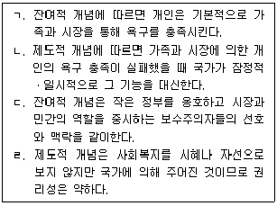
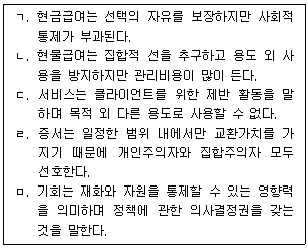
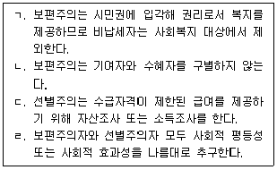
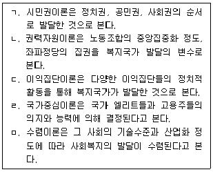
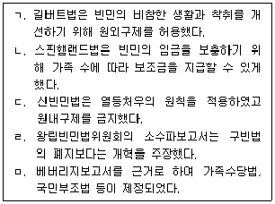
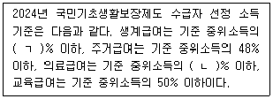
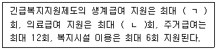
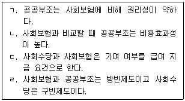
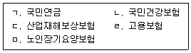

1과목: 사회복지 정책론
1. 사회복지의 잔여적 개념과 제도적 개념에 관한 설명으로 옳은 것을 모두 고른 것은?

2. 복지다원주의 또는 복지혼합에 관한 설명으로 옳지 않은 것은?
3. 급여의 형태에 관한 설명으로 옳은 것을 모두 고른 것은?

4. 사회서비스 전자바우처에 관한 설명으로 옳지 않은 것은?
5. 보편주의와 선별주의에 관한 설명으로 옳은 것을 모두 고른 것은?

6. 사회복지의 민간재원에 관한 설명으로 옳은 것은?
7. 조세와 사회보험료에 관한 설명으로 옳은 것은?
8. 길버트와 테렐(Gilbert & Terrell)이 주장한 전달체계의 개선전략 중 서비스에 대한 접근성 자체를 중요하게 간주하여 독자적인 서비스를 제공하려는 재구조화 전략은 무엇인가?
9. 사회복지정책의 발달을 설명하는 이론으로 옳은 것을 모두 고른 것은?

10. 빈곤과 소득불평등의 측정에 관한 설명으로 옳은 것은?
11. 사회적 배제의 특성에 관한 설명으로 옳지 않은 것은?
12. 영국 사회복지정책의 역사에 관한 설명으로 옳은 것을 모두 고른 것은?

13. 미국의 빈곤가족한시지원(TANF)에 관한 설명으로 옳지 않은 것은?
14. 국가가 주도적으로 사회복지를 제공해야 할 필요성으로 옳지 않은 것은?
15. 에스핑-안데르센(G. Esping-Andersen)의 복지국가 유형에 관한 설명으로 옳은 것은?
16. 소득재분배에 관한 설명으로 옳은 것은?
17. 다음에서 ㄱ, ㄴ을 순서대로 옳게 나열한 것은?

18. 사회보장기본법상 사회서비스에 관한 설명으로 옳지 않은 것은?
19. 우리나라 사회보험제도에 관한 설명으로 옳은 것은?(문제 오류로 가답안 발표시 4번으로 발표되었지만 확정답안 발표시 전항 정답 처리 되었습니다.)
20. 우리나라 공공부조제도에 관한 설명으로 옳지 않은 것은?
21. 다음에서 ㄱ, ㄴ을 합한 값은?

22. 사회보장의 특성에 관한 설명으로 옳은 것을 모두 고른 것은?

23. 우리나라 근로장려세제(EITC)에 관한 설명으로 옳지 않은 것은?
24. 사회보장 급여 중 현물급여가 아닌 것은?
25. 보건복지부장관이 관장하는 사회보험제도를 모두 고른 것은?

2과목: 사회복지 행정론
26. 사회복지조직의 특성에 관한 설명으로 옳지 않은 것은?
27. 한국 사회복지행정의 역사에 관한 설명으로 옳지 않은 것은?